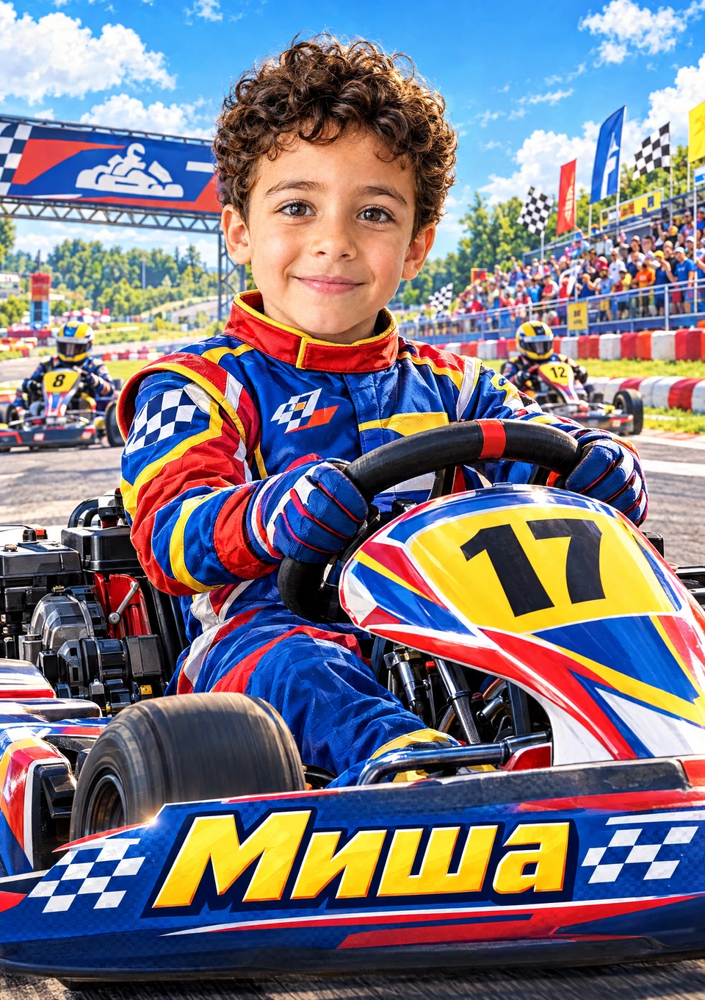
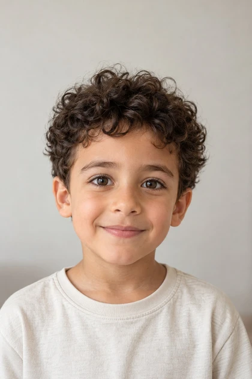

Flare · основной вариант

Результаты реальной проверки через API сайта. Первые два постера созданы по одной фотографии и одному общему сюжету для сравнения моделей. Третий постер — новая идея на выбранной модели Flare.

Вымышленный ребёнок из утверждённых примеров. Эти изображения созданы с помощью ИИ.
Лицо, гоночная сцена и оформление имени создаются вместе. В обычном конструкторе новый сюжет придумывается для каждого создания.
Всего проведены четыре контрольные генерации. В одной модель выбрала мотогонки; после уточнения темы до автомобилей и картов выполнена последняя проверка — её результат показан в третьей карточке.
Нативные изображения — 1536 × 2176 пикселей. PDF имеет физический размер А3; увеличение холста не добавляет деталей исходнику. Перед печатью проверьте лицо и написание имени.
Создать постер «Гонки» →